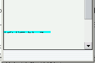

bottom:0; 指定で配置したボックスの下側が閲覧領域の外にはみ出すことがある。
<style type="text/css">
body {
position: relative;
left: 0;
top: 0;
z-index: 0;
}
</style>
<script type="text/javascript" src="b077.js"></script>
<div style="position:fixed; bottom:0; left:0; width:6em; background:aqua;">
折り返される長い文字列</div>
履歴の行き来（［戻る］→［進む］）などをすると、固定配置したボックスの下半分が閲覧領域の外にはみ出すことがあります。
Opera7.23標準モード